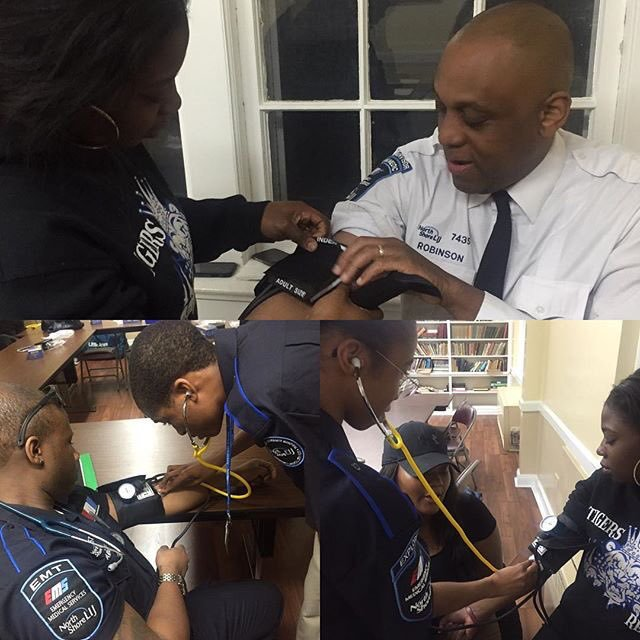
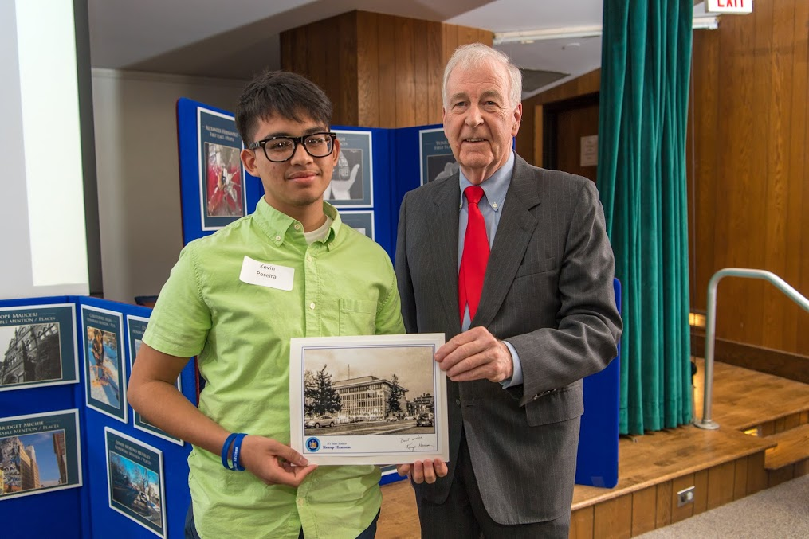

EMS, Photography, Coding

About Me:A Hempstead High School Student experienced in EMS (Post 2911), Syracuse Forensics Course (CHE 113), Online Blogger, Computer Coder (Java, HTML, JavaScript, CSS), Peer Tutor, Social Media Manager, and Deli Employee. Hobbies in military history, writer, and photography. Awards in photography (Senator Kemp Hannon "Best In Town" Photo Contest Winner) and Long Island Brain Bee participant.